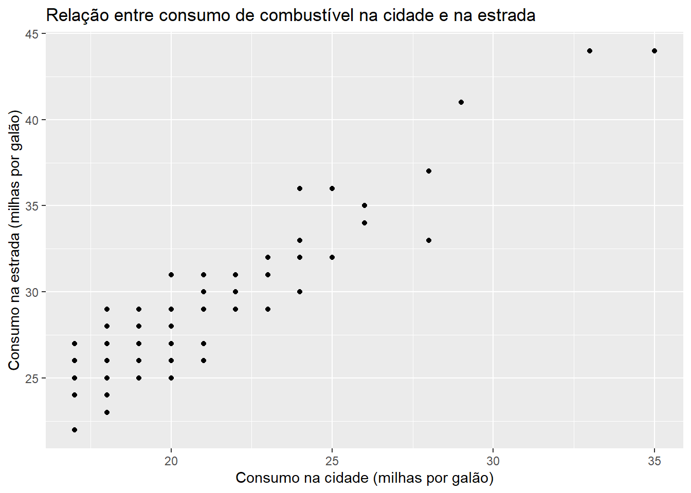

O objetivo deste artigo é demonstrar como a aplicação do framework “Seek-Sense-Share”(“The Seek > Sense > Share Framework,” n.d.) pode ser realizada no Quarto (“Quarto,” n.d.), uma plataforma de Personal Knowledge Management (PKM) que ajuda indivíduos a gerenciar e compartilhar informações de forma eficiente.
Seek
A primeira etapa do framework “Seek-Sense-Share” é a busca por informações relevantes. No contexto do Quarto, essa busca pode ser realizada através da importação de arquivos, bancos de dados ou websites. Por exemplo, vamos importar um conjunto de dados de informações sobre carros do pacote ggplot2, que está disponível no tidyverse. Podemos utilizar a função data() para carregar o conjunto de dados:
kable(head(mpg))
Table 1: tbl mpg
manufacturer
model
displ
year
cyl
trans
drv
cty
hwy
fl
class
audi
a4
1.8
1999
4
auto(l5)
f
18
29
p
compact
audi
a4
1.8
1999
4
manual(m5)
f
21
29
p
compact
audi
a4
2.0
2008
4
manual(m6)
f
20
31
p
compact
audi
a4
2.0
2008
4
auto(av)
f
21
30
p
compact
audi
a4
2.8
1999
6
auto(l5)
f
16
26
p
compact
audi
a4
2.8
1999
6
manual(m5)
f
18
26
p
compact
Observe que o comando head(mpg) é utilizado para verificar as primeiras linhas do conjunto de dados e garantir que ele foi carregado corretamente.
A etapa “Sense” envolve a interpretação e organização das informações coletadas na etapa anterior. No Quarto, podemos utilizar as funcionalidades de edição, organização e anotação de documentos para estruturar as informações coletadas e facilitar o processo de criação.
Vamos utilizar o pacote dplyr do tidyverse para filtrar as informações do conjunto de dados de carros de acordo com um determinado critério, por exemplo, carros com alta economia de combustível. Para isso, vamos criar uma nova tabela com apenas os carros que têm um consumo de combustível acima da média.
# A tibble: 6 × 11
manufacturer model displ year cyl trans drv cty hwy fl class
<chr> <chr> <dbl> <int> <int> <chr> <chr> <int> <int> <chr> <chr>
1 audi a4 1.8 1999 4 auto(l5) f 18 29 p compa…
2 audi a4 1.8 1999 4 manual(m5) f 21 29 p compa…
3 audi a4 2 2008 4 manual(m6) f 20 31 p compa…
4 audi a4 2 2008 4 auto(av) f 21 30 p compa…
5 audi a4 2.8 1999 6 manual(m5) f 18 26 p compa…
6 audi a4 3.1 2008 6 auto(av) f 18 27 p compa…
Observe que utilizamos a função filter() do dplyr para selecionar apenas as linhas do conjunto de dados que atendem ao nosso critério.
Share
A etapa “Share” envolve o compartilhamento do conhecimento criado. No Quarto, podemos exportar e compartilhar documentos criados, bem como análises e visualizações de dados criadas com linguagens de programação como R e Python.
Vamos utilizar o pacote ggplot2 para criar um gráfico de dispersão que mostre a relação entre o consumo de combustível na cidade (cty) e na estrada (hwy) dos carros selecionados.
ggplot(df_filtrado, aes(x = cty, y = hwy)) +geom_point() +labs(title ="Relação entre consumo de combustível na cidade e na estrada", x ="Consumo na cidade (milhas por galão)", y ="Consumo na estrada (milhas por galão)")

Observe que o gráfico criado pode ser exportado e compartilhado em diferentes formatos, como PDF, imagem ou HTML.
Equações
Também é possível usar referências cruzadas em equações
Em suma, a gestão eficiente de conhecimento é essencial para a produtividade e inovação em diversos setores, desde a pesquisa acadêmica até a indústria e os negócios. A abordagem Seek-Sense-Share proposta por Jarold Harsh oferece uma estrutura sólida para o gerenciamento de informações e criação de conhecimento útil e aplicável.
O Quarto, por sua vez, é uma plataforma de PKM que pode ajudar os usuários a implementar essa abordagem na prática. Com suas ferramentas de importação, organização, anotação e exportação de informações, o Quarto permite que os usuários gerenciem seus conhecimentos de forma eficiente e os compartilhem com colegas e colaboradores de forma simples e intuitiva.
Combinando a abordagem Seek-Sense-Share com o Quarto, é possível criar um ambiente de colaboração e inovação que pode levar a resultados significativos em diversos campos. Seja você um pesquisador, um empresário ou um estudante, o Quarto pode ser uma ferramenta poderosa para ajudá-lo a gerenciar seu conhecimento e criar soluções inovadoras para problemas complexos.